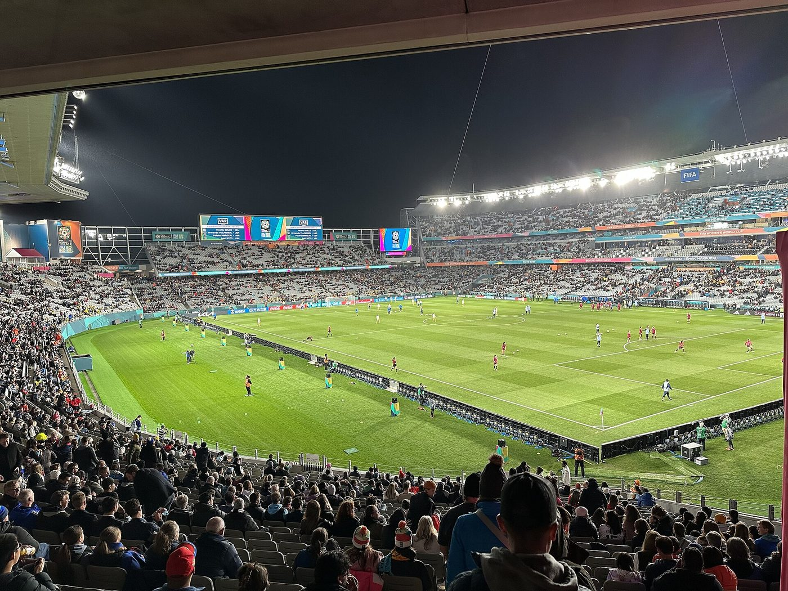
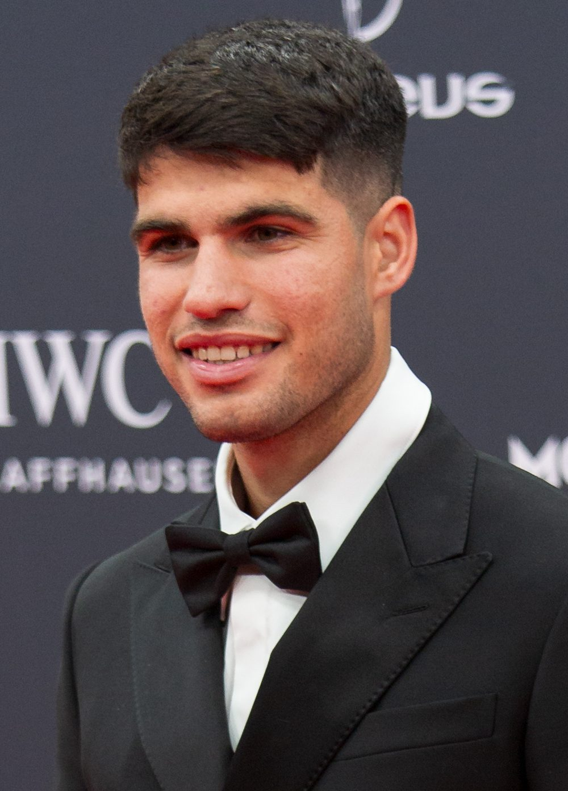

For forty minutes, the Wallabies believed. Tom Wright scored a brilliant try in the seventh minute, and captain Harry Wilson went over under the posts just before half-time to make it 17–14. Then the All Blacks did what they so often do at Eden Park: they turned up the pressure and ran in five second-half tries. Damian McKenzie kicked six conversions and a penalty, and the final score, 50–19, was brutal.
The numbers tell a gloomy story for Australia. The Wallabies haven't beaten New Zealand at Eden Park for 40 years, which makes the ground feel almost impregnable. They've beaten the Wallabies 12 times in a row and keep the Bledisloe Cup for another year. To make it sting a little more, New Zealand's coach is Dave Rennie, who used to coach Australia.
There are reasons for hope. Two weeks earlier, the Wallabies beat South Africa's Springboks 42–38 in Perth, even though yellow cards left them down to 11 men at one stage. The second Bledisloe Test is at Stadium Australia in Sydney next Saturday, 17 October. And the Rugby World Cup comes to Australia in October 2027, about a year from now, so this team has plenty of time to grow.
What a game. Newcastle raced into a 12–0 lead and were still ahead at half-time. But the Sydney Roosters fought back, and with ten minutes left veteran halfback Daly Cherry-Evans calmly slotted a field goal from 20 metres to make it 19–12. That single point turned out to be the winner: the Knights scored a try in the 77th minute, but ran out of time. It was a nerveless kick in the biggest moment of the season.
Mark Nawaqanitawase scored two tries in his final NRL match before heading to Japan to play rugby union. It's the Roosters' 16th premiership and their first since 2019. They also won the women's grand final earlier in the day, beating the Broncos 30–6.

The NBA's 2026–27 season starts on Tuesday 20 October in America, which is Wednesday morning in Australia. The New York Knicks are the champions, their first title in more than 50 years, and they'll raise their banner at Madison Square Garden on opening night.
| # | Game | Sydney time | Why watch |
|---|---|---|---|
| 1 | Boston Celtics at Detroit Pistons | 6.00am | An early start to the season, literally |
| 2 | Philadelphia 76ers at New York Knicks | 10.00am | Banner night for the champions |
| 3 | Oklahoma City Thunder at San Antonio Spurs | 12.30pm | A rematch of last season's Western Conference finals |

The Shanghai Masters (7–18 October) is missing its biggest name. Jannik Sinner has pulled out with a right knee injury and will take the rest of 2026 off. That hiatus opens the door for everyone else, especially Carlos Alcaraz, who started with a 6–3, 6–3 win over Juan Manuel Cerundolo. Alcaraz is trying to become the first Spanish man ever to win the Shanghai title.
Keep an eye on the defending champion, too. Last year, Valentin Vacherot of Monaco won the title as a qualifier ranked outside the world's top 200, one of the most astonishing stories tennis has ever seen. Novak Djokovic, Alexander Zverev and Ben Shelton are also in the draw. In the women's game, Mirra Andreeva and China's Qinwen Zheng have reached the final of the China Open in Beijing.